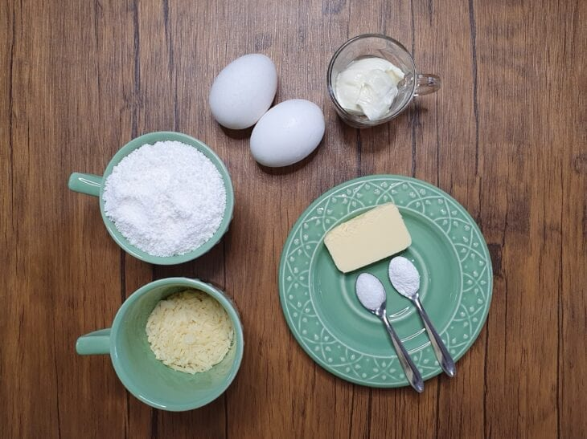
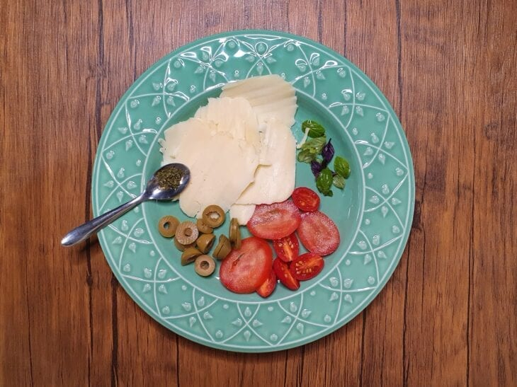
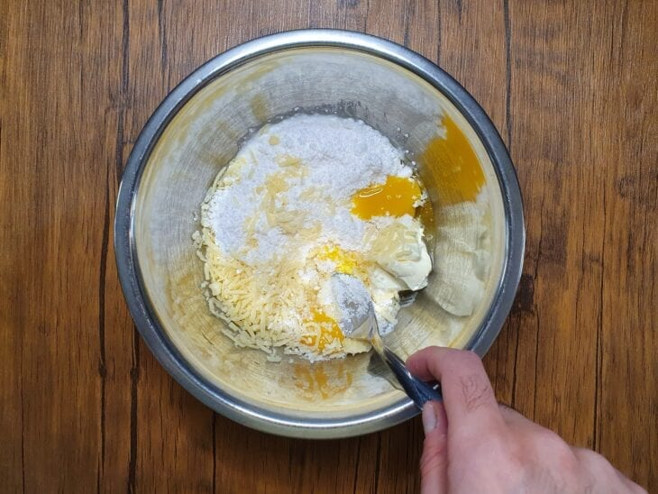
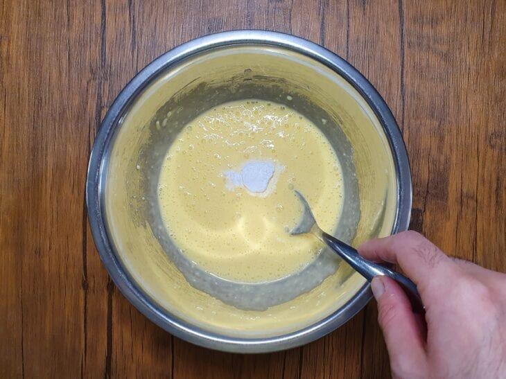
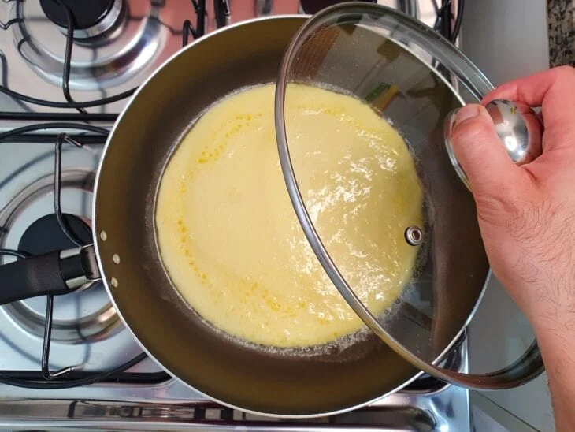
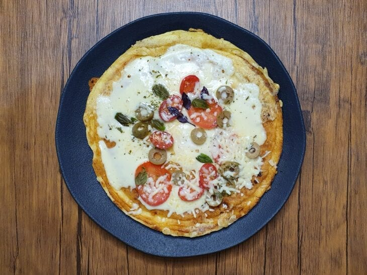

Pizza Saudavel
lista de ingredientes da massa
2 ovos
140 g de tapioca
50 g de queijo ralado
1 colher de sopa de requeijão cremoso
1 colher de café de sal
1 colher de café de fermento químico em pó (fermento para bolo)
1 colher de sopa de manteiga
lista de ingredientes do recheio
Mussarela a gosto
Manjericão a gosto
Tomate a gosto
Azeitonas a gosto
Orégano a gosto

Reúna todos os ingredientes da massa;

Reúna todos os ingredientes do recheio;

Coloque os ovos, a tapioca, o queijo ralado, o requeijão e o sal em uma tigela e misture;

Acrescente o fermento e misture delicadamente;

Leve uma frigideira ao fogo alto, derreta a manteiga, adicione a massa, coloque a tampa e deixe por 1 minuto;
Vire a massa, diminua o fogo, disponha o recheio sobre ela e tampe a frigideira novamente;

Quando o queijo derreter e a massa estiver douradinha por baixo, retire a pizza do fogo e sirva!